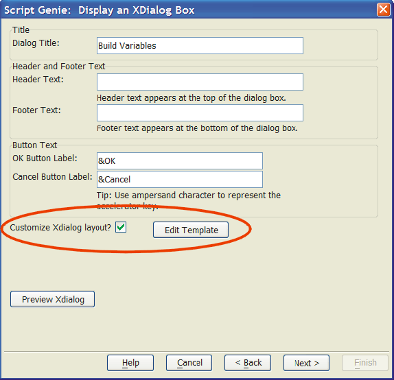
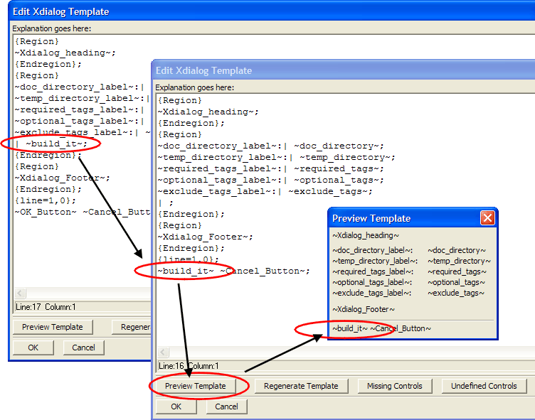

Customize Xdialog Genie Dialog Boxes
Alpha Anywhere provides a powerful tool for developers who use Action Scripting to create Xdialogs. When you create an Xdialog with Action Scripting, you now have the ability to modify the Xdialog design in a way completely compatible with Action Scripting. In other words, you can change the design of the dialog box without compromising the ability to edit or reprocess the Action Script.
The second page of the Create Xdialog Action Script Genie has a new check box. When you check the Customize Xdialog layout? check box, the Edit Template button appears.

Clicking the Edit Template button shows the Edit Xdialog Template screen. This screen provides an editable representation of your dialog box. Controls and labels are represented by tags bounded by "~" characters. In the example below, the designer moved the ~built_it~ button. Then he clicked the Preview Template button to display the Preview Template screen. Clicking OK then returns control to the Create Xdialog Action Script Genie.

Clicking Regenerate Template removes any and all edits and resets the template to the form originally generated by the genie. The Missing Controls button identifies any controls that might have removed from the template. The Undefined Controls button identifies any controls that you might have added to the template, but have not yet added to the Action Script.